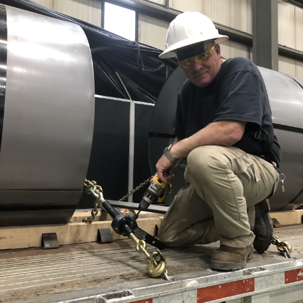

Speedbinders use a revolutionary new design that allows operators to quickly and safely tie-down their shipment.
Torque Drive binders are different and operate differently than any other binder that came before it. Done properly, drivers will experience less shoulder strain / injuries, easier operation, safer load securement and faster tie down / release times.
Torque Drive™ binders get chains tight EVERY time!
I was intrigued and skeptical of these new powered binders. After talking with the owner of the company I decided to try them. I even had one independently tested by a rigging supply company and even they were impressed. These binders save me about an hour a day and that adds up quick. Bottom line, they work as advertised. They will not back off. Set the torque on your drill and hit it but hold on. I replaced all my ratchet binders and now only use these. I can’t say enough, I’ll be a life customer. - Tom Weida
Manufactured with heat treated, forged components for a long dependable life. Smooth operation, due to a precision aligned worm gear assembly with grease fitting, for years of trouble free service. This is truly a unique high quality binder. Our binders help keep the operator’s gloves clean and dry. The operator only needs to hold on to the handle and portable drill. No need to rotate the barrel by hand like traditional binders. Manual Binders are limited in many ways . Lever binders are dangerous and illegal in many states. Ratchet binders can be time consuming to operate, often needing to be reversed and re-tightened if not enough chain links are attached. TorqueDrive™ binders are the better choice. TorqueDrive™ will save considerable time ratcheting down and releasing loads and saving time makes money!